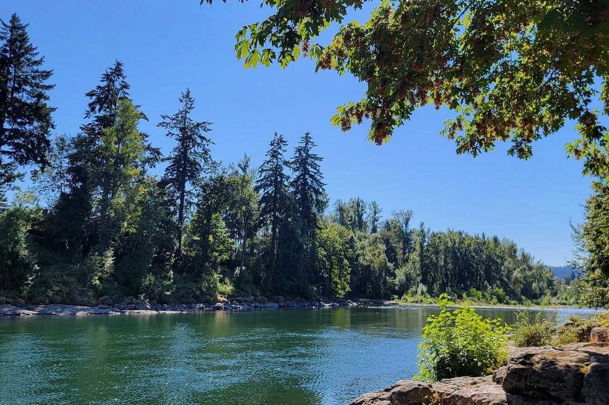

Vegetables and planting dates
Jigmey Dorjee
Experienced home gardener
- Grew up in Oregon
- Gardens in Happy Valley, Oregon
- Years of growing vegetables at home
- Checks dates against NOAA weather records
Jigmey Dorjee grew up in Oregon, where gardening means working with the weather: cold, wet springs, dry summers and long, mild falls. He's an experienced home gardener who has grown his own vegetables for years, and he knows firsthand that a Northwest garden runs on a different calendar than the national planting charts. He writes about vegetables and planting timing for Rainline Garden and checks the advice against NOAA weather records and university research.
From Jigmey's garden
- In my raised-bed garden I plant garlic around mid-October and dig it up around early July once the tops flop.
- The tomatoes that ripen best for me are 'Stupice' and 'Early Girl'. 'Brandywine' never got ripe before the fall rains.
- Slugs wiped out my lettuce the first year. Now I use a 2-inch band of crushed eggshells plus a beer trap every few beds.
- This week I'm cutting the last of the kale, spreading a thick leaf mulch on the empty beds, and ordering next year's seed from Territorial.
Articles by Jigmey 12
 What Your Last Frost Date Really Means A 'last frost date' is an average, and in half of years frost comes later. What the number means and how much margin to give tomatoes.
What Your Last Frost Date Really Means A 'last frost date' is an average, and in half of years frost comes later. What the number means and how much margin to give tomatoes. How to Harden Off Seedlings Before Planting Out Indoor seedlings scorch or stall if they go straight outside. A day-by-day routine for getting them used to sun, wind and cold nights.
How to Harden Off Seedlings Before Planting Out Indoor seedlings scorch or stall if they go straight outside. A day-by-day routine for getting them used to sun, wind and cold nights. Growing Peas in Oregon, Washington and Idaho Peas go in as soon as the soil can be worked and quit in summer heat. Sowing dates by region, snap vs. shelling, and trellising.
Growing Peas in Oregon, Washington and Idaho Peas go in as soon as the soil can be worked and quit in summer heat. Sowing dates by region, snap vs. shelling, and trellising. Late Blight on Tomatoes: How to Spot It and Keep It Away Late blight arrives with cool, wet late-summer weather and can kill tomatoes in a week. Spotting it early and keeping it out of next year's garden.
Late Blight on Tomatoes: How to Spot It and Keep It Away Late blight arrives with cool, wet late-summer weather and can kill tomatoes in a week. Spotting it early and keeping it out of next year's garden. Succession Planting: Steady Harvests Instead of All at Once Small sowings of lettuce, beans and carrots every few weeks, and a fall crop after the spring one, keep a small bed producing longer.
Succession Planting: Steady Harvests Instead of All at Once Small sowings of lettuce, beans and carrots every few weeks, and a fall crop after the spring one, keep a small bed producing longer. When and How to Plant Garlic in Oregon, Washington and Idaho Garlic goes in around October and comes out the next July. Planting dates by region, hardneck or softneck, and curing the harvest.
When and How to Plant Garlic in Oregon, Washington and Idaho Garlic goes in around October and comes out the next July. Planting dates by region, hardneck or softneck, and curing the harvest. Starting Vegetable Seeds Indoors: A Northwest Timeline Onions in late winter, peppers next, tomatoes last. A Northwest seed-starting timeline and the light setup that keeps seedlings stocky.
Starting Vegetable Seeds Indoors: A Northwest Timeline Onions in late winter, peppers next, tomatoes last. A Northwest seed-starting timeline and the light setup that keeps seedlings stocky. Growing Potatoes in Oregon, Washington and Idaho Seed potatoes, cutting and curing them, hilling, and digging both new potatoes and keepers in Oregon, Washington and Idaho.
Growing Potatoes in Oregon, Washington and Idaho Seed potatoes, cutting and curing them, hilling, and digging both new potatoes and keepers in Oregon, Washington and Idaho. Growing Vegetables in Containers on a Northwest Balcony or Patio A balcony is enough for herbs, greens and cherry tomatoes. Pot sizes, potting mix and the summer watering that pots need.
Growing Vegetables in Containers on a Northwest Balcony or Patio A balcony is enough for herbs, greens and cherry tomatoes. Pot sizes, potting mix and the summer watering that pots need. The Best Tomatoes for Cool Northwest Summers Big slicers often stay green in a cool Northwest summer. These are the tomatoes that do ripen in Portland, Seattle and on the coast.
The Best Tomatoes for Cool Northwest Summers Big slicers often stay green in a cool Northwest summer. These are the tomatoes that do ripen in Portland, Seattle and on the coast. Fall and Winter Vegetable Gardening West of the Cascades West of the Cascades, kale, leeks and carrots keep going through most winters. The catch is planting them in July and August.
Fall and Winter Vegetable Gardening West of the Cascades West of the Cascades, kale, leeks and carrots keep going through most winters. The catch is planting them in July and August. Gardening in Bend and Central Oregon's Short Season Bend and Redmond can see frost in June and again in September. What still grows well there, and how gardeners stretch the season.
Gardening in Bend and Central Oregon's Short Season Bend and Redmond can see frost in June and again in September. What still grows well there, and how gardeners stretch the season.
Questions for Jigmey or a correction? Email info@rainlinegarden.org.